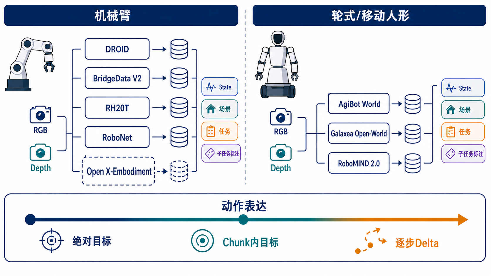

开源大规模机器人数据集调研：机械臂与轮式/移动人形#
检索截止：2026-08-06 范围：以真实机器人、公开可获取、可用于模仿学习/VLA 的轨迹数据为主

1. 口径与术语#
- 轨迹/episode：一次从开始到终止的机器人执行。RH20T 等数据集会把同一次执行的多个相机流分别计为 sequence，因此不能直接把 sequence 当独立轨迹。
- 绝对目标（Abs）：动作直接给出基座/世界坐标系下的末端目标位姿或目标关节角。
- Chunk 内目标（Chunk-relative / interval-relative）：模型一次预测一段动作，段内目标相对当前观测或 chunk 起点表达；这是模型训练/推理包装方式，不一定是原始数据的存储方式。
- 逐步相对（Delta）：每步给出相对上一状态的
Δx, ΔR或速度；本文把速度控制也归入完全相对类。 - Action chunk：多数数据集本身只保存逐帧 action；chunk 长度通常由策略决定。只有项目明确报告训练配置时才列出，不把模型配置误写成数据属性。
- 明确多任务/子任务划分分三级：强＝长轨迹具有帧区间级 subtask/atomic-skill 标签；中＝有统一 skill taxonomy 或活动—任务层级，但无逐帧边界；弱/无＝只有整条轨迹语言指令。
2. 主表：优先数据集#
| 数据集 | 本体与开放状态 | 规模、时长、典型轨迹 | 原始 action 表达 / chunk | State | 相机与 Depth | 场景、任务与多任务划分 |
|---|---|---|---|---|---|---|
| AgiBot World Beta / 2026 | 移动双臂、双 Franka、AgileX 等；Beta 可下载，2026 分阶段滚动开放 | Beta 1,003,672 条、2,976.4 h、217 tasks、87 skills、100+ 场景、5 domains；按总量折算均值约 10.7 s/条；30 Hz | 原始以绝对关节位置目标为主，移动底盘含速度；GO-1 训练使用 H=30、chunk=30（约 1 s），这是模型配置 | 关节位置/速度、末端、夹爪/灵巧手、底盘，部分力/触觉 | 头顶/头部、左右腕多视角 RGB；Alpha 明确含 PNG depth 和相机参数，2026 schema 含 head depth | 家庭、餐饮、工业、零售、办公；强：item/scene/task/skill、时间段级 instruction segments、atomic skill、关键帧和目标框。最适合验证“地面 pick-up 与桌面 pick-up 是否共享同一 atomic skill” |
| Galaxea Open-World | R1-Lite 轮式双臂人形；HF gated，但可申请下载 | 500+ h、约 50k 条、227 个 task archives、11 个物理地点；用 50k 折算约 36 s/条 | 双臂为绝对目标关节位置；底盘/躯干为 twist 速度；数据逐帧 15 Hz。G0 使用 action sequence，但数据集不规定固定 chunk | 双臂关节位置/速度、左右 EE 7D pose、夹爪、4D 躯干、3D 底盘、底盘速度和 IMU | 头部双 RGB + 左右腕 RGB，720×1280；当前公开 LeRobot schema 不含 depth（硬件能力不能等同于已发布字段） | 住宅、厨房/餐饮、零售、办公室；强：双语 fine-grained subtask，task_index 与 coarse_task_index；长程移动操作适配度高 |
| RoboMIND 2.0 | 6 种双臂/移动本体；项目页公开，下载可用性需按仓库版本核验 | 310k+ 真实轨迹、739 tasks；另有 20k 仿真；其中 20k mobile、12k tactile；官方未统一披露总小时和平均时长 | 跨本体同时保留关节/末端控制，主要为 teleop 的目标关节/末端动作；不同子集不可假定单一坐标口径；chunk 由 MIND-2-VLA 配置决定 | 关节、EE、夹爪/灵巧手、移动底盘；部分触觉 | AgileX/ARX：头部 + 双腕 RGB；不同本体配置不同；部分数据有 depth/3D，非全量统一 | 复杂双臂、接触、移动操作；强：detailed annotation，MIND-2 高层 planner 把任务分为 grounded subgoals。跨本体和子任务研究价值高，但 schema 异质性也最大 |
| DROID | Franka Panda 单臂，13 机构统一平台；RLDS 与 raw 开放 | 76k 条、350 h、564 scenes、86 tasks；平均约 16.6 s/条 | 默认 RLDS action = 6D joint velocity + 1D gripper position，属完全相对/速度；raw 同时保留笛卡尔位置/速度与关节位置/速度命令；无原生固定 chunk | 7D joint pos、6D Cartesian state、gripper；raw 更完整 | 两台外部 ZED2 + 腕部 ZED Mini，3 个 stereo views；RLDS 是左目 RGB，raw SVO 可恢复 stereo/depth；有内外参（部分校准更新） | in-the-wild，564 场景；弱：86 整体任务、每条最多 3 个语言改写，无统一帧级子任务边界。场景泛化强，层级规划监督弱 |
| RT-1 dataset | Everyday Robot 移动机械臂；官方项目称数据已开放，并纳入 OXE | 130k+ episodes、700+ language tasks、13 robots、17 个月；未公开可靠平均时长 | 3 Hz；7D 臂动作（XYZ/RPY/夹爪）+ 3D base + mode/terminate；臂/底盘运动为增量/速度式相对控制；RT-1 逐步输出，不是 chunk policy | 项目公开格式以图像、语言、动作和机器人状态为主，低维字段依 OXE builder | 主视角 RGB；公开训练接口不依赖 depth | 多个办公室厨房；中偏弱：指令可按 verb/skill 与 object 因子化（pick/open/place 等），但没有长轨迹内部统一 subtask 时间段 |
| RoboMIND 1.x | Franka、UR-5e、AgileX 双臂、Tien Kung 人形；HF gated，Apache-2.0 元数据 | 107k 条、479 tasks、96 objects；Franka 52,926、UR 25,170、Tien Kung 19,152、AgileX 10,629；单臂多 <200 帧，双臂/人形多 >500 帧 |
同时存 master action 的关节位置、EE、夹爪，通常为绝对目标；30 Hz 转换版可用；不同本体字段不同 | joint position/velocity、EE pose、gripper；部分本体需用 URDF 重算 EE | 1 RGB 或 3 RGB，视本体；HDF5 支持 optional depth，但不是全子集一致 | 6 类：关节机构、协同、基础、多物体、精细、场景理解；v1.2 有 frame-level fine-grained language，故为强/中（覆盖并非所有旧版本） |
| BridgeData V2 | WidowX 250 单臂；完全开放 | 论文口径 60,096 条（50,365 teleop + 9,731 scripted），项目页清洗后 53,896 条；24 environments、13 skills；5 Hz、平均 38 steps ≈ 7.6 s | 7D：逐步 6D EE pose delta + 二值夹爪；无原生固定 chunk | EE/关节与夹爪状态（RLDS 具体字段依版本） | 固定肩后 RGB-D + 两个随机位姿 RGB，640×480；有 depth，常用基线仅取肩后 RGB | 7 个 toy kitchens + 桌面/水槽/洗衣机/工具箱；中：13 skills 与每条语言任务，但通常无长轨迹子任务边界 |
| RoboNet | 7 种机械臂/夹爪；开放聚合库 | 162,417 条、15M frames、113 camera viewpoints；约 92 帧/条；采样率跨来源不同，不能可靠换算统一秒数 | 末端位置/旋转 delta + gripper；完全相对；无原生 chunk | Cartesian EE + gripper，低维字段随平台有差异 | 多外部 RGB 视角；无统一 depth | 主要是桌面 pushing/picking、跨机器人/相机/物体；无明确任务层级，适合视觉动力学预训练而非语言多任务规划 |
| RH20T | 7 类机械臂配置；开放但体量很大 | 官方称 110k sequences，实质约 13k 独立 robot trajectories（多相机流重复计数），约 140 tasks/33 skills；论文不同表述存在口径冲突 | 保留多种机器人 action、joint/TCP 与触觉/力控信号；因配置异质，不能归为单一绝对/相对；无统一 chunk | joint、TCP/EE、gripper、6D force/torque，部分触觉与音频 | 每平台 8–10 个全局 RGB-D + 1–2 个 in-hand，相机全标定；有 depth | 真实接触丰富，来自 RLBench、MetaWorld 与自定义技能；中：skill/task 与语言描述，但不是所有长序列都有统一原子动作时间边界 |
| RoboSet | Franka 单臂；项目页可下载子集，完整规模的公开状态曾分批更新 | 官方项目页当前明确 30,050 条（9,500 teleop），38 tasks、12 skills；文献中的 98.5k 往往采用扩展/分视角或旧统计，不宜直接当独立公开 episode | 关节/EE teleop 与回放控制；以目标状态为主；无原生固定 chunk | Franka joint、EE/夹爪，RGB/depth | 左、右、顶、腕共 4 views；论文报告 RGB + depth | 厨房日常活动；中偏强：12 skills、38 tasks，并把 4–6 tasks 组成 semantic activity，能学习链式活动；但不等同于每条轨迹的帧级 primitive 边界 |
| Open X-Embodiment (OXE) | 22 embodiments、60 个左右来源数据集的标准化聚合；开放 | 早期发布 1M+，后续目录常见约 1.4M；不能给统一场景数、平均时长或任务数 | 统一字段名不等于统一控制语义：world_vector/rotation_delta/gripper 可能来自 Abs、Delta 或 velocity；训练时常转换到统一 delta EEF。chunk 由 RT-X/Octo 等模型决定 |
各源不同；标准 RLDS 只保证可映射字段，不保证状态/标定齐全 | 主 RGB 基本可用，腕部与 depth 高度不均；不能整体标“有 depth” | 最大优点是跨本体规模；弱/异质：多数只有整条语言指令，各来源 task taxonomy 不一致，不适合作为统一 primitive 标签金标准 |
3. “Action / Chunk / State”最重要的判断#
3.1 原始 action 和模型输出 action 必须分开#
同一个数据集可以在原始文件中保存绝对关节目标，却在训练时被转换成 q_target - q_current；也可以像 DROID 一样同时保存 position 与 velocity，但 RLDS 默认 action 只暴露 joint velocity。建议数据清洗时为每个通道保存：
representation ∈ {absolute, delta, velocity}
space ∈ {joint, end_effector, base, torso, gripper, dexterous_hand}
reference ∈ {world, robot_base, current_state, chunk_start}
rotation ∈ {euler, axis_angle, quaternion, rot6d}
frequency_hz, action_horizon, execution_horizon
3.2 三类表达的工程取舍#
| 表达 | 优点 | 主要风险 | 更匹配的数据 |
|---|---|---|---|
| 绝对 EE/关节目标 | 轨迹平滑、适合 ACT/ALOHA 类 chunk、误差不随积分累积 | 强依赖本体、标定和基座坐标；移动底盘后“绝对世界位姿”难统一 | AgiBot、Galaxea、RoboMIND、RoboSet |
| Chunk 内目标 | 兼顾平滑和闭环重规划；适合 10–30 步 action chunk | 必须明确相对当前帧还是 chunk 起点；重叠 chunk 的执行策略会改变监督 | GO-1（H=30）、多数 diffusion/flow VLA 的训练包装 |
| 逐步 delta/velocity | 跨场景平移更容易，易于混合多来源数据 | 积分漂移、长程移动操作误差累积，旋转 delta 定义常不一致 | BridgeData V2、DROID、RoboNet、RT-1/OXE 统一接口 |
3.3 State 的最低可用集合#
对机械臂应至少保留：q, dq, EE pose, gripper state；对轮式人形再加：base pose/twist, torso/head, IMU。若只保留图像和 action，会无法判断绝对动作的参考系、无法做 action conversion，也难以在不同本体之间 retarget。
4. 相机与 Depth 结论#
- 硬件有深度相机 ≠ 开放数据含 depth。 Galaxea R1 硬件有双目深度，但当前 Open-World LeRobot schema 只列 RGB；DROID 的 depth 在 raw ZED/SVO 中，而非轻量 RLDS 图像字段。
- 深度最强：RH20T（多达 8–10 个 RGB-D、全标定）、AgiBot World（多视角 RGB/Depth 与相机参数）、BridgeData V2（固定 RGB-D）、部分 RoboMIND。
- 视角泛化最强：DROID（1,417 个相机位姿、3 stereo views）、RoboNet（113 viewpoints）、RH20T。
- 移动人形部署匹配最好：Galaxea 与 AgiBot，因为既有头部/腕部视角，又真实包含底盘和上身状态；仅用机械臂桌面数据补充视觉/抓取先验即可，不能替代目标本体数据。
5. 对“pick up 子任务一致性”的专项结论#
如果目标是让“从地上捡”和“从桌上捡”共享同一个 pick_up primitive，同时把接近位置、躯干高度和底盘移动作为上下文，建议优先级：
- AgiBot World 2026 / Beta：最完整的 task → segment → atomic skill 层级；可直接检查相同 atomic label 在不同高度/场景的复用。
- Galaxea Open-World：有
coarse_task_index与 fine-grainedtask_index，且本体就是轮式双臂；最适合建立“navigate / reach / pick / retract / place”的统一子任务词表。 - RoboMIND 2.0：任务与本体最丰富，且 MIND-2 明确采用高层 subgoal + 低层 VLA；但跨 6 个本体时需做动作和标签规范化。
- RoboSet / BridgeData：有 skill taxonomy，可用于补充
pick/place/open基础动作，但缺少移动底盘、地面高度和稳定的帧级边界。 - DROID / RT-1 / OXE：数据规模和场景多样性强，适合预训练；原始标签通常不足以直接证明两个任务共享同一子任务，需要重新做时序分段或自动标注。
推荐建立两层标签而不是把“从地上捡”和“从桌上捡”硬合成一个扁平任务：
high_level_task: pick_object_from_{floor|table}
primitive_sequence:
navigate_to_object? → align_base → reach → grasp/pick_up → lift/retract
primitive_context:
support_surface={floor, table}, target_height, arm={left,right,both},
requires_torso=true|false, requires_base=true|false
这样 pick_up 的语义保持一致，差异进入 context；模型既能共享 primitive，又不会丢掉地面拾取所需的底盘/躯干约束。
6. 选型建议#
- 目标是轮式人形长程多任务：以 Galaxea Open-World + AgiBot World + RoboMIND 2.0 为主训练集；DROID/Bridge/OXE 只作为 manipulation pretraining。
- 目标是统一 action tokenizer：先在本体内统一到相对关节或相对 EE，再显式保留 base/torso 分支；不要把绝对关节、EE delta、base velocity 直接拼成同一无语义向量。
- 目标是 3D/depth policy：优先 AgiBot/RH20T/DROID raw；Galaxea 当前公开版需自行从双目重建或补采，不能假设 depth 已发布。
- 目标是层级任务规划：优先 AgiBot/Galaxea/RoboMIND 2.0；其余数据应二次生成 frame-level subtask boundary。
- 目标是可快速落地的小规模实验：BridgeData V2 最干净、动作口径明确、单机下载与训练成本低；DROID 更真实但 raw 数据和标定处理成本高。
7. 主要来源与核验说明#
- AgiBot World 官方仓库与 Beta 规模；AgiBot World 论文/项目报告；AgiBot World 2026 数据卡
- Galaxea Open-World 官方数据卡；项目页
- RoboMIND 2.0 项目页；论文
- DROID 项目页；官方 schema；论文
- RT-1 官方项目页与数据说明
- RoboMIND 官方数据卡；论文
- BridgeData V2 项目页；论文
- RoboNet 论文；TFDS schema
- RH20T 项目页；论文
- RoboSet 官方项目页
- Open X-Embodiment 项目页
数据质量警告#
- “任务数”定义差异极大：有的按语言指令计数，有的按技能×物体×场景计数，不能直接横比。
- RH20T 的 110k 是多相机 sequence 口径；独立机器人执行约 13k。RoboSet 的 98.5k 也常混入扩展或分视角口径；本文优先采用项目页可下载 episode 数。
AgiBot World Beta与滚动更新的AgiBot World 2026是相关但不同版本；前者提供稳定百万级统计，后者强化层级标注、失败恢复和新主题，不应把两个版本的规模简单相加。- 本文“平均轨迹时长”只有在官方同时给出总小时与轨迹数时才做算术折算；其余标为未披露，避免从最大 horizon 猜平均值。
8. 面向 Franka 训练的数据存储结构（RLDS / HDF5）#
8.1 本节范围、符号与五个数据源的选取理由#
本节针对单臂 Franka Panda / FR3 的通用 skill 预训练，只保留可直接进入训练管线的 RLDS/TFDS 或 HDF5 版本，不再展开原始 MP4、SVO、JPEG/PKL 等采集格式。五个数据源的角色如下。
| 优先级 | 数据源与保留格式 | 选取理由 | 对 Franka 的主要限制 |
|---|---|---|---|
| 1 | DROID RLDS | 全部由 Franka Panda 采集；场景、机构和相机位姿多样；官方 schema 最稳定，适合作为主训练集 | 默认 action 是速度式表示，必须与本地 Franka 控制接口对齐 |
| 2 | RoboMIND Franka HDF5 | 约 52,926 条 Franka 轨迹；任务覆盖广；保留关节、末端、夹爪及多相机信息 | 1RGB/3RGB/FR3-dual 子集并非完全同构，不能只写一个固定 shape |
| 3 | RoboSet HDF5 | Franka 厨房多任务；Activity→Task→Scene 层级和 12 类 skill 适合通用 skill 学习 | 官方公开页面未发布逐 key 的稳定 schema；夹爪配置也需与本地硬件核对 |
| 4 | OXE 中的 Franka 来源 RLDS | 可在统一 RLDS 容器下补充更多 Franka 场景，并复用 Octo/RT-X 数据加载工具 | OXE 只统一容器，不统一 action 语义；必须逐 builder 做适配 |
| 5 | BridgeData V2 RLDS | 单臂桌面 skill 丰富，7D 末端动作易于重定向；TFDS schema 完整公开 | 本体是 6-DoF WidowX，不应在 Franka 最终微调中占高比例 |
符号约定：
T：一条轨迹的时间步数，逐 episode 可变；RLDS 中steps是长度为T的序列。H, W：原始图像高度和宽度；官方未保证跨子集固定时使用符号表示。C=3：彩色图像通道数。N：TFRecord shard 数；它不是 episode 数。()：标量；string也是标量张量。- HDF5 中若某数据集写为
[T,H,W,3]，单步读取后的 shape 为[H,W,3]。 可选不是 shape 未知，而是该 key 在部分 episode/subset 中不存在。训练前必须先建立 presence mask。
完整性的口径：下列“磁盘目录树”完整列出训练版本的稳定层级模式，而不是展开数万条真实文件名；“逻辑树”列出官方明确公开的全部训练字段。官方未公开稳定 key/shape 的部分明确标为可变或需实文件核验，不以常见命名替代事实。
8.2 DROID：RLDS / TFDS#
8.2.1 选取理由#
DROID 与目标本体完全一致，76k 轨迹覆盖 564 个场景和 86 类任务。RLDS 版完整、约 1.7 TB；droid_100 约 2 GB，具有相同 schema，最适合先验证 loader、action normalization 和 action chunk 构造。
8.2.2 磁盘目录树#
<TFDS_DATA_DIR>/
└── droid/ # 或 droid_100
└── <version>/
├── dataset_info.json # 标量 JSON；split、shard、统计与 feature 元数据
├── features.json # 标量 JSON；序列化 feature schema
├── droid-train.tfrecord-00000-of-<N>
├── droid-train.tfrecord-00001-of-<N>
├── ...
└── droid-train.tfrecord-<N-1>-of-<N>
一个 TFRecord shard 包含多个 episode；episode 与文件不是一一对应关系。
8.2.3 RLDS逻辑树与shape#
episode # 一个 RLDS episode
├── episode_metadata
│ ├── recording_folderpath string, shape=() # 原始采集目录
│ └── file_path string, shape=() # 原始文件路径
└── steps Sequence, length=T
└── step[t]
├── is_first bool, shape=()
├── is_last bool, shape=()
├── is_terminal bool, shape=()
├── language_instruction string, shape=()
├── language_instruction_2 string, shape=()
├── language_instruction_3 string, shape=()
├── observation
│ ├── gripper_position float64, shape=(1,)
│ ├── cartesian_position float64, shape=(6,) # xyz + 3D rotation表示
│ ├── joint_position float64, shape=(7,)
│ ├── wrist_image_left uint8, shape=(180,320,3)
│ ├── exterior_image_1_left uint8, shape=(180,320,3)
│ └── exterior_image_2_left uint8, shape=(180,320,3)
├── action_dict
│ ├── gripper_position float64, shape=(1,)
│ ├── gripper_velocity float64, shape=(1,)
│ ├── cartesian_position float64, shape=(6,)
│ ├── cartesian_velocity float64, shape=(6,)
│ ├── joint_position float64, shape=(7,)
│ └── joint_velocity float64, shape=(7,)
├── action float64, shape=(7,)
├── reward float32, shape=()
└── discount float32, shape=()
使用说明：
- 官方将默认
action描述为“6 维 joint velocity + 1 维 gripper position”。由于 Franka 本体是 7 关节，这一字段不能仅凭注释推断为完整 7 关节速度；工程上应优先使用action_dict/joint_velocity (7,)，并以官方 loader 和样本数值核验默认action (7,)的确切分量。 - RLDS 版只保留三个左目 RGB 流；stereo、原始分辨率和可重建 depth 位于 raw SVO/MP4 版，不在上述 RLDS schema 中。
- 生成长度为
K的 action chunk 后，监督 shape 为(K,7)；若采用action_dict/joint_velocity + gripper_position自建 8D 动作，则为(K,8)，但这已不再是官方默认 action schema。
8.3 RoboMIND 1.x：Franka HDF5#
8.3.1 选取理由#
RoboMIND 1.x 含 52,926 条 Franka 单臂轨迹，并发布训练/验证划分、整轨迹语言指令和 v1.2 帧级细粒度语言标注。相比混用其他本体，只保留 h5_franka_1rgb 与 h5_franka_3rgb；仅在目标确为双 FR3 时才加入 h5_franka_fr3_dual。
8.3.2 磁盘目录树#
RoboMIND/
├── h5_franka_1rgb/
│ └── <task_name>/
│ └── success_episodes/
│ ├── train/
│ │ └── <MMDD_HHMMSS>/
│ │ └── data/
│ │ └── trajectory.hdf5
│ └── val/
│ └── <MMDD_HHMMSS>/
│ └── data/
│ └── trajectory.hdf5
├── h5_franka_3rgb/
│ └── <task_name>/
│ └── success_episodes/
│ ├── train/<episode_id>/data/trajectory.hdf5
│ └── val/<episode_id>/data/trajectory.hdf5
├── h5_franka_fr3_dual/ # 可选；双臂目标才保留
│ └── <task_name>/success_episodes/{train,val}/<episode_id>/data/trajectory.hdf5
├── RoboMIND_instr.csv # 每行字段为标量；task到语言指令映射
└── language_description_annotation_json/
└── <subset_or_task>/
└── <episode_id>.json # 帧区间/帧级语言标注
8.3.3 HDF5逻辑树与shape#
RoboMIND 的 Franka HDF5 以 master 表示遥操作端/目标动作，以 puppet 表示执行机器人状态。不同小版本和 1RGB/3RGB 子集的 key 有差异，下面保留官方文档可确认的公共语义，并把图像尺寸写成文件级变量。
trajectory.hdf5
├── master
│ ├── joint_position float, shape=(T,7) # 目标/主端关节
│ ├── end_effector_pose float, shape=(T,6或7) # xyz+rpy 或 xyz+quaternion
│ └── gripper_position float, shape=(T,1或2) # 子集/夹爪接口相关
├── puppet
│ ├── joint_position float, shape=(T,7) # Franka执行关节状态
│ ├── joint_velocity float, shape=(T,7), 可选
│ ├── end_effector_pose float, shape=(T,6或7), 可选
│ └── gripper_position float, shape=(T,1或2)
└── observations
├── rgb_images
│ ├── camera_top/primary uint8, shape=(T,H,W,3) # 1RGB至少一个视角
│ ├── camera_left uint8, shape=(T,H,W,3), 3RGB
│ ├── camera_right uint8, shape=(T,H,W,3), 3RGB
│ └── <third_camera> uint8, shape=(T,H,W,3), 可选
└── depth_images
└── <camera_name> uint16/float, shape=(T,H,W), 可选
字段约束和不确定性：
joint_position (T,7)是 Franka 公共且最可靠的低维字段。end_effector_pose的末维必须通过h5py实文件检查：6通常表示xyz+rpy，7通常表示xyz+quaternion；不可只根据字段名决定旋转编码。gripper_position可能以单一开合宽度(T,1)或双指状态(T,2)存储，训练前应统一成(T,1)。- RGB 的
H,W由文件内 dataset shape 决定；Franka 图像通道顺序是 BGR，模型输入前转换成 RGB。 h5_franka_3rgb有 675 条轨迹只含左右相机；缺失第三视角应使用 presence mask，不能补零后当作真实黑图。- 公开数据卡没有保证所有 Franka HDF5 文件具有相同的
master/puppet可选 key。以上树不能替代下载后对all_robot_h5_info_v1.2.md和实文件的扫描。 - 若以
master/joint_position作为原始 action，则单步 shape 为(7,)，长度K的 chunk 为(K,7)；若拼接统一夹爪宽度，则为(8,)和(K,8)。
8.4 RoboSet：HDF5#
8.4.1 选取理由#
RoboSet 是 Franka 厨房多任务数据，提供 4 个相机视角、RGB/depth、关节与末端控制信息；其 Activity→Task→Scene 层级可直接用于构建共享 pick/open/place skill taxonomy。它优先级低于 DROID/RoboMIND，是因为公开网页只确认“包含哪些模态”，没有发布跨下载包稳定的逐 key 规范。
8.4.2 磁盘目录树#
官方按 Activity、Task、Scene 分项提供 HDF5 下载。下载文件名和压缩包根目录可能变化，建议在本地规范化为：
RoboSet/
├── Baking_Prep/
│ ├── Slide_Open_Drawer/Scene_<id>/<task_scene>.hdf5
│ ├── Pick_Butter/Scene_<id>/<task_scene>.hdf5
│ ├── Place_Butter/Scene_<id>/<task_scene>.hdf5
│ └── Slide_Close_Drawer/Scene_<id>/<task_scene>.hdf5
├── Clean_Kitchen/
│ └── <task_name>/Scene_<id>/<task_scene>.hdf5
├── Heat_Soup/
│ └── <task_name>/Scene_<id>/<task_scene>.hdf5
├── Make_Tea/
│ └── <task_name>/Scene_<id>/<task_scene>.hdf5
├── Make_Toast/
│ └── <task_name>/Scene_<id>/<task_scene>.hdf5
├── Serve_Soup/
│ └── <task_name>/Scene_<id>/<task_scene>.hdf5
└── Stow_Bowl/
└── <task_name>/Scene_<id>/<task_scene>.hdf5
这棵树是推荐的落盘规范；Activity→Task→Scene 语义是官方结构，但官方网站下载的实际压缩包不保证已建立完全相同的目录名。
8.4.3 HDF5逻辑树与shape#
论文确认 MT-ACT 使用的每条轨迹为 T=40、5 Hz，并包含以下模态。由于官方未公开稳定 key 拼写，下列名称是规范化逻辑名，括号内 shape 是论文所述信息能够确定的维度；落地时应保存原 key 到规范化 key 的映射表。
<task_scene>.hdf5
└── <trajectory_id> / demo_<id>
├── observations
│ ├── rgb
│ │ ├── right uint8, shape=(T,H,W,3)
│ │ ├── left uint8, shape=(T,H,W,3)
│ │ ├── top uint8, shape=(T,H,W,3)
│ │ └── wrist uint8, shape=(T,H,W,3)
│ ├── depth
│ │ ├── right uint16/float, shape=(T,H,W)
│ │ ├── left uint16/float, shape=(T,H,W)
│ │ ├── top uint16/float, shape=(T,H,W)
│ │ └── wrist uint16/float, shape=(T,H,W)
│ ├── joint_position float, shape=(T,7)
│ ├── joint_velocity float, shape=(T,7)
│ ├── end_effector_pose float, shape=(T,6或7)
│ ├── end_effector_velocity float, shape=(T,6)
│ ├── gripper_position float, shape=(T,G)
│ └── gripper_velocity float, shape=(T,G)
├── controls
│ ├── joint_control float, shape=(T,7)
│ ├── end_effector_control float, shape=(T,6或7)
│ └── gripper_control float, shape=(T,G)
├── timestamps float, shape=(T,)
└── language_instruction string, shape=()
其中：
T=40适用于论文 MT-ACT 使用的 7,500 条 teleoperation 子集；不要据此断言全部 30,050 条数据都严格为 40 帧。G是夹爪自由度/存储通道数，官方公开材料没有给出稳定数值；下载后必须核验，随后统一到 Franka gripper width(T,1)。H,W、depth dtype/单位、end_effector_pose旋转编码和实际 HDF5 key 均需实文件核验。- 这一节刻意不把常见 ACT/robomimic 的
observations/qpos、action等名称写成官方字段，因为现有公开证据不足以证明所有 RoboSet 包使用该schema。
8.5 Open X-Embodiment：只保留 Franka 来源 RLDS#
8.5.1 选取理由#
OXE 的价值是统一 RLDS 数据加载入口，而不是把所有机器人强行统一成同一个动作含义。对 Franka 应采用白名单，只纳入元数据明确为 Franka/Panda/FR3 且能完成 action 语义审计的 builder；DROID 已作为独立主数据集时，应去重，不能在 OXE 混合中再次采样。
8.5.2 磁盘目录树#
<TFDS_DATA_DIR>/
├── <franka_source_dataset_A>/
│ └── <version>/
│ ├── dataset_info.json
│ ├── features.json
│ ├── <dataset_A>-train.tfrecord-00000-of-<N>
│ └── ...
├── <franka_source_dataset_B>/
│ └── <version>/
│ ├── dataset_info.json
│ ├── features.json
│ └── *.tfrecord-*
└── droid/ # 若主DROID已下载，此处使用同一路径并去重
└── <version>/
├── dataset_info.json
├── features.json
└── *.tfrecord-*
OXE 没有一个名为 all_franka 的官方单一目录。每个来源数据集都是独立 TFDS builder、独立版本、独立 feature schema。
8.5.3 RLDS容器逻辑树与shape#
以下是 OXE/RT-X 消费端的公共逻辑接口；带 D_* 的末维由各 builder 决定，必须从该 builder 的 features.json 读取。
episode
├── episode_metadata
│ ├── episode_id/source_id string或整数, shape=(), 可选
│ └── <source_metadata> source-defined, shape=source-defined
└── steps Sequence, length=T
└── step[t]
├── observation
│ ├── image uint8, shape=(H,W,3) # 主工作区RGB
│ ├── wrist_image uint8, shape=(H2,W2,3), 可选
│ ├── depth uint16/float, shape=(H,W)或(H,W,1), 可选
│ ├── state float32, shape=(D_state,), 可选
│ ├── joint_position float32, shape=(7,), 可选
│ ├── end_effector_pose float32, shape=(6或7,), 可选
│ └── gripper_state float32, shape=(D_gripper,), 可选
├── action float32, shape=(D_action,)
├── language_instruction string, shape=()
├── reward float32, shape=()
├── discount float32, shape=()
├── is_first bool, shape=()
├── is_last bool, shape=()
└── is_terminal bool, shape=()
若使用 RT-1-X 的统一 7D 操作接口，可规范化为：
standardized_action
├── world_vector float32, shape=(3,) # Δx,Δy,Δz/velocity/absolute，来源相关
├── rotation_delta float32, shape=(3,) # Δroll,Δpitch,Δyaw等，约定相关
└── gripper float32, shape=(1,)
concatenated_action float32, shape=(7,)
action_chunk(K) float32, shape=(K,7)
“shape统一”不代表“语义统一”：world_vector (3,)在不同来源中可能是绝对位置、逐步delta或速度；rotation_delta (3,)的坐标系和欧拉角顺序也可能不同。每个 builder 必须额外记录：
representation enum/string, shape=()
reference_frame enum/string, shape=()
rotation_convention enum/string, shape=()
control_frequency_hz float32, shape=()
这些是建议新增的manifest字段，不是OXE原始RLDS保证提供的字段。
8.6 BridgeData V2：RLDS / TFDS bridge:0.1.0#
8.6.1 选取理由#
BridgeData V2 是跨本体辅助数据：包含 13 类基础桌面技能、24 个环境，action/state 都是固定 7D，且官方 TFDS schema 完整。由于本体为 WidowX 250，它适合小比例补充 pick/place/push/open/close 视觉与动作先验，不适合作为 Franka 最终微调主数据。
8.6.2 磁盘目录树#
<TFDS_DATA_DIR>/
└── bridge/
└── 0.1.0/
├── dataset_info.json
├── features.json
├── bridge-train.tfrecord-00000-of-<N_train>
├── ...
├── bridge-train.tfrecord-<N_train-1>-of-<N_train>
├── bridge-test.tfrecord-00000-of-<N_test>
├── ...
└── bridge-test.tfrecord-<N_test-1>-of-<N_test>
TFDS bridge:0.1.0公开统计为 train 25,460 episodes、test 3,475 episodes，数据集约 387.49 GiB。它与项目页所述全部 raw 轨迹数不同，是特定 TFDS 转换版本，不应混为同一个计数口径。
8.6.3 RLDS逻辑树与shape#
episode
├── episode_metadata
│ ├── episode_id int32, shape=()
│ ├── file_path string, shape=()
│ ├── has_image_0 bool, shape=()
│ ├── has_image_1 bool, shape=()
│ ├── has_image_2 bool, shape=()
│ ├── has_image_3 bool, shape=()
│ └── has_language bool, shape=()
└── steps Sequence, length=T
└── step[t]
├── action float32, shape=(7,)
├── discount float32, shape=()
├── is_first bool, shape=()
├── is_last bool, shape=()
├── is_terminal bool, shape=()
├── language_embedding float32, shape=(512,)
├── language_instruction string, shape=()
├── observation
│ ├── image_0 uint8, shape=(256,256,3)
│ ├── image_1 uint8, shape=(256,256,3)
│ ├── image_2 uint8, shape=(256,256,3)
│ ├── image_3 uint8, shape=(256,256,3)
│ └── state float32, shape=(7,)
└── reward float32, shape=()
解释：
action (7,)为 6D 末端增量动作加夹爪命令；用于 action chunk 时 shape 为(K,7)。state (7,)的具体分量顺序必须以 TFDS builder 源码为准，不能仅凭shape等同于Franka的7个关节角。image_0通常是主固定视角，其余为随机外部视角或腕部视角；用has_image_i判断真实可用性。缺失视角即使在TFDS中具有固定图像shape，也不能当作有效观测。- 该RLDS版本没有单独的depth feature；raw BridgeData中部分轨迹有depth，不等于TFDS
bridge:0.1.0提供depth。
8.7 五套数据进入统一 Franka action-chunk 管线时的目标shape#
建议不要修改原文件，而是在索引/转换层生成统一训练样本：
training_sample
├── observation
│ ├── external_rgb uint8/float32, shape=(V_ext,Hm,Wm,3)
│ ├── wrist_rgb uint8/float32, shape=(V_wrist,Hm,Wm,3)
│ ├── camera_valid_mask bool, shape=(V_ext+V_wrist,)
│ ├── joint_position float32, shape=(7,)
│ ├── joint_velocity float32, shape=(7,)
│ ├── ee_pose float32, shape=(7,) # xyz+quaternion
│ └── gripper_width float32, shape=(1,)
├── language_instruction string, shape=()
├── action_chunk
│ ├── ee_delta float32, shape=(K,6) # xyz+axis-angle增量
│ ├── gripper float32, shape=(K,1)
│ └── valid_mask bool, shape=(K,)
└── provenance
├── dataset_id string/int, shape=()
├── episode_id string/int, shape=()
├── source_timestep int32, shape=()
├── action_semantics enum/int, shape=()
└── source_frequency_hz float32, shape=()
若直接拼接，最终动作张量为：
action_chunk = concat(ee_delta, gripper, axis=-1)
shape = (K,7)
推荐统一规则：
- 所有旋转先转换为单位四元数状态，再将相邻目标转换为局部 axis-angle delta
(3,)。 - 所有平移转换到 Franka
baseframe，单位统一为米。 - 夹爪统一为物理宽度或归一化开合量
(1,)，并明确0/1方向。 - 不存在的
dq、EE pose或相机不能静默补零；必须同时产生 valid mask。 - DROID和本地Franka数据权重最高；Bridge等跨本体数据只在EE-relative空间参与预训练。
- 轨迹尾部不足
K步时进行padding，同时将valid_mask对应位置设为False，避免padding动作进入loss。
8.8 下载后必须执行的结构审计#
在正式转换前，应对每个 HDF5/TFDS builder 输出以下清单：
dataset_name
version
physical_file_count
episode_count
all_keys
shape_set_per_key
dtype_set_per_key
missing_rate_per_key
min/median/max_T
image_resolution_set
action_min/max/percentiles
timestamp_delta_distribution
NaN/Inf_count
其中 RoboMIND 和 RoboSet 必须递归扫描全部 HDF5 key；OXE 必须按 builder 分别扫描，不能只对合并后的 batch 检查。只有在 shape_set_per_key、旋转约定、参考坐标系和控制频率全部确认后，才可以生成统一 (K,7) action chunk。